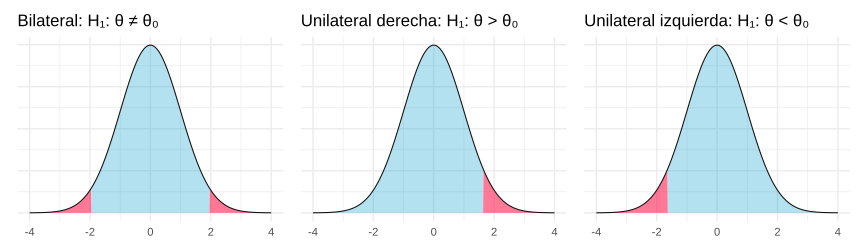
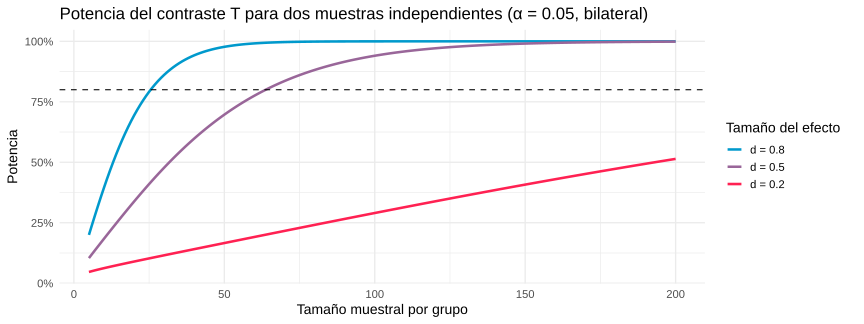
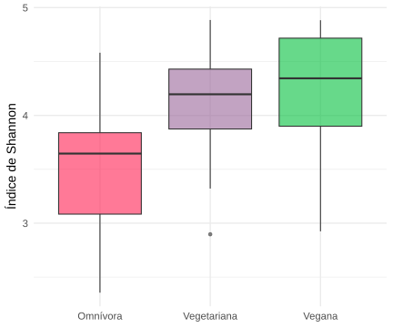

Errores, p-valores, potencia y principales contrastes en Nutrigenómica
Contrastes de hipótesis
Alfredo Sánchez Alberca
Introducción a los contrastes de hipótesis
Hipótesis estadísticas
En muchos estudios de Nutrigenómica no queremos estimar un parámetro, sino tomar una decisión sobre él:
¿Pierden menos peso los portadores del alelo de riesgo de FTO con una dieta hipocalórica?
¿Reduce la suplementación con folato la homocisteína en los homocigotos TT de MTHFR?
¿Está la distribución de genotipos en equilibrio de Hardy-Weinberg?
Definición 1 (Hipótesis nula y alternativa)
La hipótesis nula\(H_0\) es la afirmación que se mantiene mientras los datos no aporten evidencia en contra. Suele expresar ausencia de efecto o de diferencias e incluye siempre la igualdad.
La hipótesis alternativa\(H_1\) es la afirmación que queremos demostrar y que se acepta si los datos aportan evidencia suficiente en contra de \(H_0\).
Ejemplo 1 Para estudiar si los portadores AA de FTO pierden de media menos peso que los TT: \[
H_0: \mu_{AA} = \mu_{TT} \qquad H_1: \mu_{AA} < \mu_{TT}.
\]
El contraste como un juicio
Un contraste de hipótesis funciona como un juicio penal:
Juicio
Presunción de inocencia.
El fiscal aporta pruebas.
Si las pruebas son suficientes, se condena; si no, se absuelve.
Absolver no significa demostrar la inocencia.
Contraste
Se asume \(H_0\) cierta.
La muestra aporta la evidencia.
Si la evidencia contra \(H_0\) es suficiente, se rechaza \(H_0\); si no, no se rechaza.
No rechazar \(H_0\) no demuestra que sea cierta.
Importante
La ausencia de evidencia no es evidencia de ausencia. Un estudio pequeño que no encuentra interacción gen-dieta no demuestra que no exista.
Tipos de contraste
Según la forma de \(H_1\) el contraste puede ser:
Bilateral: \(H_0: \theta = \theta_0\) frente a \(H_1: \theta \neq \theta_0\).
Unilateral a la derecha: \(H_0: \theta = \theta_0\) frente a \(H_1: \theta > \theta_0\).
Unilateral a la izquierda: \(H_0: \theta = \theta_0\) frente a \(H_1: \theta < \theta_0\).
Tipos de errores
Al decidir con una muestra podemos equivocarnos de dos formas:
Decisión \ Realidad
\(H_0\) cierta
\(H_0\) falsa
No rechazar \(H_0\)
Decisión correcta (\(1-\alpha\))
Error de tipo II (\(\beta\))
Rechazar \(H_0\)
Error de tipo I (\(\alpha\))
Decisión correcta (potencia \(1-\beta\))
Definición 2 (Errores de tipo I y II)
Error de tipo I (falso positivo): rechazar \(H_0\) cuando es cierta. Su probabilidad es \(\alpha = P(\mbox{Rechazar } H_0 \mid H_0)\).
Error de tipo II (falso negativo): no rechazar \(H_0\) cuando es falsa. Su probabilidad es \(\beta = P(\mbox{No rechazar } H_0 \mid H_1)\).
Ejemplo 2 Al estudiar si una variante de APOA2 modifica el efecto de la grasa saturada sobre el IMC:
Error de tipo I: concluir que hay interacción cuando no la hay (y dar consejos dietéticos personalizados sin fundamento).
Error de tipo II: no detectar una interacción real (y perder una oportunidad de nutrición de precisión).
Estadístico del contraste y regiones de rechazo
Estadístico del contraste
Definición 3 (Estadístico del contraste) El estadístico del contraste es una función de la muestra que mide la discrepancia entre los datos y \(H_0\), y cuya distribución es conocida cuando \(H_0\) es cierta.
Normalmente tiene la forma \[
\mbox{Estadístico} = \frac{\mbox{Estimación} - \mbox{Valor bajo } H_0}{\mbox{Error estándar}}.
\]
Ejemplo 3 Para contrastar si la homocisteína media de los homocigotos TT de MTHFR supera el umbral de 12 µmol/l, \(H_0: \mu = 12\) frente a \(H_1: \mu > 12\), se usa el estadístico \[
T = \frac{\bar X - 12}{S/\sqrt{n}} \sim T(n-1) \quad \mbox{si } H_0 \mbox{ es cierta.}
\] Valores de \(T\) próximos a 0 son compatibles con \(H_0\); valores grandes son evidencia a favor de \(H_1\).
Regiones de aceptación y rechazo
Definición 4 (Región de aceptación y región de rechazo)
La región de rechazo (o crítica) es el conjunto de valores del estadístico que llevan a rechazar \(H_0\). Se construye en la dirección de \(H_1\) y con probabilidad \(\alpha\) bajo \(H_0\).
La región de aceptación es el resto de valores, que son compatibles con \(H_0\).
Los valores críticos son los límites entre ambas regiones.

Región de aceptación y región de rechazo con \(\alpha = 0.05\) y estadístico \(N(0,1)\).
Ejemplo 4 Con las 20 mediciones de homocisteína de los homocigotos TT de MTHFR, contrastar \(H_0: \mu = 12\) frente a \(H_1: \mu > 12\) con \(\alpha = 0.05\).
x <-seq(-4, 7, length.out =800)dibujar_regiones(\(x) dt(x, n -1), x, \(x) x > t_crit,"Distribución T(19) bajo H₀", "T", obs = t_obs)
El estadístico observado (verde) cae en la región de rechazo: rechazamos \(H_0\) y concluimos que la homocisteína media supera los 12 µmol/l.
Riesgo alfa y p-valor
Riesgo alfa o nivel de significación
Definición 5 (Nivel de significación) El nivel de significación o riesgo\(\alpha\) es la probabilidad máxima de cometer un error de tipo I que estamos dispuestos a asumir. Lo fija el investigador antes de ver los datos.
Valores habituales: \(\alpha = 0.05\), \(0.01\) o \(0.001\).
Cuanto menor es \(\alpha\), más evidencia exigimos para rechazar \(H_0\) y menor es la región de rechazo.
Con muchos contrastes hay que reducir \(\alpha\) en cada uno para controlar los falsos positivos globales: en GWAS se usa \(\alpha = 5\cdot 10^{-8}\).
Nota
Elegir \(\alpha\) es una decisión sobre el coste de un falso positivo. En un estudio exploratorio de metilación se puede tolerar un \(\alpha\) mayor (controlando la FDR) que en un ensayo que va a fundamentar una recomendación dietética.
p-valor
Definición 6 (p-valor) El p-valor es la probabilidad de obtener, si \(H_0\) es cierta, un valor del estadístico igual o más extremo (en la dirección de \(H_1\)) que el observado en la muestra.
Regla de decisión: si p-valor \(\leq \alpha\) se rechaza \(H_0\); si p-valor \(> \alpha\) no se rechaza.
El p-valor (área roja) mide la compatibilidad de los datos con \(H_0\): cuanto menor es, más evidencia hay en contra de \(H_0\).
Ejemplo 5 En el ejemplo de la homocisteína:
pt(t_obs, df = n -1, lower.tail =FALSE)
#> [1] 5.196073e-05
t.test(hcy, mu =12, alternative ="greater")
#>
#> One Sample t-test
#>
#> data: hcy
#> t = 4.8803, df = 19, p-value = 5.196e-05
#> alternative hypothesis: true mean is greater than 12
#> 95 percent confidence interval:
#> 13.57549 Inf
#> sample estimates:
#> mean of x
#> 14.44
Interpretación del p-valor
Lo que SÍ es
Una medida de la evidencia en contra de \(H_0\).
La probabilidad de unos datos tan extremos suponiendo\(H_0\) cierta.
Una cantidad que depende del tamaño del efecto y del tamaño muestral.
Lo que NO es
La probabilidad de que \(H_0\) sea cierta.
La probabilidad de que el resultado se deba al azar.
Una medida de la magnitud o la importancia clínica del efecto.
Una frontera mágica: \(p = 0.049\) y \(p = 0.051\) aportan la misma evidencia.
Significación estadística no es relevancia clínica
En un biobanco con 400 000 personas, una diferencia de 0.1 kg/m² de IMC entre genotipos puede tener un p-valor de \(10^{-20}\) y no tener ninguna relevancia nutricional. Hay que acompañar siempre el p-valor del tamaño del efecto y su intervalo de confianza.
Relación entre contrastes e intervalos de confianza
Un contraste bilateral con nivel de significación \(\alpha\) rechaza \(H_0: \theta = \theta_0\) si y solo si \(\theta_0\) queda fuera del intervalo de confianza de nivel \(1-\alpha\).
Ejemplo 6 En el ejemplo de la suplementación con omega-3:
#> p_valor li ls
#> 8.487908e-06 -4.533037e+01 -2.409820e+01
El 0 queda fuera del intervalo y el p-valor es menor que 0.05: las dos conclusiones coinciden. El intervalo, además, informa de la magnitud del efecto.
Riesgo beta, potencia y tamaño del efecto
Riesgo beta y potencia
Definición 7 (Potencia) El riesgo\(\beta\) es la probabilidad de no rechazar \(H_0\) cuando es falsa (error de tipo II). La potencia es la probabilidad de rechazar \(H_0\) cuando es falsa: \[
\mbox{Potencia} = 1-\beta = P(\mbox{Rechazar } H_0 \mid H_1).
\]
A diferencia de \(\alpha\), \(\beta\) depende del verdadero valor del parámetro bajo \(H_1\). Se suele exigir una potencia de al menos el 80% (\(\beta\leq 0.2\)).
¿De qué depende la potencia?
La potencia de un contraste aumenta cuando:
Aumenta el tamaño del efecto real (la diferencia entre \(H_0\) y la realidad).
Aumenta el tamaño muestral\(n\) (se reduce el error estándar).
Disminuye la variabilidad\(\sigma\) (mediciones más precisas, diseños pareados).
Aumenta el nivel de significación\(\alpha\) (a costa de más falsos positivos).
Se usa un contraste unilateral en lugar de bilateral (si la dirección está justificada).
Importante
Los efectos de las interacciones gen-dieta suelen ser pequeños. Muchos estudios de nutrigenética con unos cientos de participantes no tienen potencia suficiente, lo que explica la falta de replicación de muchos resultados.
Tamaño del efecto
Definición 8 (Tamaño del efecto) El tamaño del efecto es una medida de la magnitud de la diferencia o de la asociación, que no depende del tamaño muestral.
Situación
Medida
Pequeño
Mediano
Grande
Diferencia de medias
\(d\) de Cohen \(= \dfrac{\bar x_1-\bar x_2}{s_p}\)
0.2
0.5
0.8
Diferencia de proporciones
\(h\) de Cohen \(= 2\arcsin\sqrt{p_1}-2\arcsin\sqrt{p_2}\)
0.2
0.5
0.8
Tablas de contingencia
\(w\) de Cohen o \(V\) de Cramér
0.1
0.3
0.5
ANOVA
\(\eta^2\)
0.01
0.06
0.14
Correlación
\(r\) de Pearson
0.1
0.3
0.5
También son tamaños del efecto las medidas en la escala original (diferencia de kg perdidos, reducción de mg/dl de LDL) y las de riesgo, como el odds ratio por alelo en estudios de asociación genética.
Curvas de potencia
Ejemplo 7 Queremos diseñar un estudio para detectar una diferencia de 2 kg en la pérdida de peso entre portadores AA y TT de FTO tras una dieta hipocalórica. Por estudios previos, la desviación típica de la pérdida de peso es de 4 kg. ¿Cuántos participantes necesitamos por grupo para tener una potencia del 80% con \(\alpha = 0.05\)?
2/4# d de Cohen
#> [1] 0.5
power.t.test(delta =2, sd =4, sig.level =0.05, power =0.80)
#>
#> Two-sample t test power calculation
#>
#> n = 63.76576
#> delta = 2
#> sd = 4
#> sig.level = 0.05
#> power = 0.8
#> alternative = two.sided
#>
#> NOTE: n is number in *each* group
¿Y si el efecto fuese de solo 1 kg (\(d = 0.25\))? Hace falta multiplicar el tamaño muestral por 4: 253 participantes por grupo.
Principales contrastes en Nutrigenómica
Cómo elegir el contraste
La elección del contraste depende de:
El tipo de variable respuesta: cuantitativa, cualitativa o de conteo.
El número de grupos que se comparan: uno, dos o más.
El diseño: muestras independientes o pareadas (medidas repetidas).
Las condiciones de aplicación: normalidad (Shapiro-Wilk) e igualdad de varianzas (F, Levene). Si no se cumplen, se usan contrastes no paramétricos o transformaciones (logaritmo).
Ayuda
Antes de aplicar un contraste paramétrico conviene comprobar la normalidad con un gráfico Q-Q y shapiro.test(), sobre todo con muestras pequeñas.
Resumen de contrastes paramétricos
Objetivo
Contraste
Estadístico
Función de R
Ejemplo
Media de una población
T para una muestra
\(T(n-1)\)
t.test(x, mu = )
Homocisteína en TT de MTHFR frente a 12 µmol/l
Proporción de una población
Binomial / Z
\(N(0,1)\)
binom.test, prop.test
Prevalencia de TT frente a la de referencia
Varianza de una población
Chi-cuadrado
\(\chi^2(n-1)\)
qchisq, pchisq
Precisión de un método de medida de HbA1c
Medias de dos poblaciones independientes
T de Student / Welch
\(T\)
t.test(x, y)
Pérdida de peso en AA frente a TT de FTO
Medias de dos poblaciones pareadas
T pareada
\(T(n-1)\)
t.test(x, y, paired = TRUE)
Triglicéridos antes y después de omega-3
Varianzas de dos poblaciones
F de Fisher
\(F(n_1-1, n_2-1)\)
var.test
Variabilidad glucémica según TCF7L2
Medias de más de dos poblaciones
ANOVA
\(F(k-1, n-k)\)
aov, oneway.test
IMC según genotipo AA, AT, TT de FTO
Correlación lineal
T de Pearson
\(T(n-2)\)
cor.test
Ingesta de folato y homocisteína
Resumen de contrastes para datos categóricos y no paramétricos
Objetivo
Contraste
Estadístico
Función de R
Ejemplo
Proporciones de dos poblaciones
Z / Chi-cuadrado 2×2
\(\chi^2(1)\)
prop.test
Normalización de homocisteína según MTHFR
Independencia de dos variables cualitativas
Chi-cuadrado de independencia
\(\chi^2((r-1)(c-1))\)
chisq.test
Genotipo de FTO y obesidad
Ajuste a una distribución teórica
Chi-cuadrado de bondad de ajuste
\(\chi^2(k-1-m)\)
chisq.test(p = )
Equilibrio de Hardy-Weinberg
Independencia con frecuencias esperadas < 5
Exacto de Fisher
—
fisher.test
Variante rara y respuesta a la dieta
Dos poblaciones independientes sin normalidad
U de Mann-Whitney
\(W\)
wilcox.test
PCR según tipo de dieta
Dos poblaciones pareadas sin normalidad
Rangos con signo de Wilcoxon
\(V\)
wilcox.test(paired = TRUE)
Insulina antes y después de una intervención
Más de dos poblaciones sin normalidad
Kruskal-Wallis
\(\chi^2(k-1)\)
kruskal.test
Diversidad de la microbiota según dieta
Correlación monótona
Spearman
\(\rho\)
cor.test(method = "spearman")
Fibra dietética y abundancia de Bifidobacterium
Muchos contrastes simultáneos
Corrección de Bonferroni / FDR
—
p.adjust
Expresión diferencial, EWAS, GWAS
Contraste T para una muestra
Ejemplo 8 ¿Supera la homocisteína media de los homocigotos TT de MTHFR con baja ingesta de folato el umbral de 12 µmol/l?
\(H_0: \mu = 12\) frente a \(H_1: \mu > 12\).
shapiro.test(hcy)$p.value # Comprobación de normalidad
#> [1] 0.9211623
t.test(hcy, mu =12, alternative ="greater")
#>
#> One Sample t-test
#>
#> data: hcy
#> t = 4.8803, df = 19, p-value = 5.196e-05
#> alternative hypothesis: true mean is greater than 12
#> 95 percent confidence interval:
#> 13.57549 Inf
#> sample estimates:
#> mean of x
#> 14.44
Contraste para una proporción
Ejemplo 9 En una cohorte de 250 personas se encuentran 38 homocigotos TT de MTHFR C677T. ¿Es la prevalencia del genotipo TT distinta del 10% descrito en población del norte de Europa?
\(H_0: p = 0.10\) frente a \(H_1: p \neq 0.10\).
binom.test(38, 250, p =0.10)
#>
#> Exact binomial test
#>
#> data: 38 and 250
#> number of successes = 38, number of trials = 250, p-value = 0.01085
#> alternative hypothesis: true probability of success is not equal to 0.1
#> 95 percent confidence interval:
#> 0.1098640 0.2026108
#> sample estimates:
#> probability of success
#> 0.152
Contraste para una varianza
Ejemplo 10 Un método de medida de la HbA1c capilar se considera preciso si su desviación típica es menor de 0.3 %. ¿Cumple el nuevo protocolo este requisito?
\(H_0: \sigma = 0.3\) frente a \(H_1: \sigma < 0.3\).
Aunque la desviación típica muestral es 0.25, con solo 15 mediciones no hay evidencia suficiente para afirmar que \(\sigma < 0.3\). Haría falta una muestra mayor.
Contraste T para dos muestras independientes
Ejemplo 11 ¿Pierden menos peso los homocigotos AA de FTO que los TT tras 6 meses de dieta hipocalórica?
\(H_0: \mu_{AA} = \mu_{TT}\) frente a \(H_1: \mu_{AA} < \mu_{TT}\).
#>
#> Welch Two Sample t-test
#>
#> data: perdida_AA and perdida_TT
#> t = -3.382, df = 40.94, p-value = 0.0007969
#> alternative hypothesis: true difference in means is less than 0
#> 95 percent confidence interval:
#> -Inf -1.218228
#> sample estimates:
#> mean of x mean of y
#> 4.311111 6.736000
Contraste T para dos muestras pareadas
Ejemplo 12 ¿Reduce la suplementación con omega-3 los triglicéridos?
\(H_0: \mu_d = 0\) frente a \(H_1: \mu_d < 0\), con \(d = \mbox{después} - \mbox{antes}\).
shapiro.test(tg_despues - tg_antes)$p.value
#> [1] 0.1882036
t.test(tg_despues, tg_antes, paired =TRUE, alternative ="less")
#>
#> Paired t-test
#>
#> data: tg_despues and tg_antes
#> t = -7.0643, df = 13, p-value = 4.244e-06
#> alternative hypothesis: true mean difference is less than 0
#> 95 percent confidence interval:
#> -Inf -26.01189
#> sample estimates:
#> mean difference
#> -34.71429
Contraste F de comparación de varianzas
Ejemplo 13 ¿Es más variable la respuesta glucémica postprandial en los portadores TT de TCF7L2 que en los CC?
\(H_0: \sigma^2_{TT} = \sigma^2_{CC}\) frente a \(H_1: \sigma^2_{TT} > \sigma^2_{CC}\).
#>
#> F test to compare two variances
#>
#> data: auc_TT and auc_CC
#> F = 3.7468, num df = 15, denom df = 19, p-value = 0.003909
#> alternative hypothesis: true ratio of variances is greater than 1
#> 95 percent confidence interval:
#> 1.677117 Inf
#> sample estimates:
#> ratio of variances
#> 3.746785
ANOVA de un factor
Ejemplo 14 ¿Difiere el IMC medio entre los tres genotipos de FTO rs9939609?
\(H_0: \mu_{AA} = \mu_{AT} = \mu_{TT}\) frente a \(H_1\): al menos una media es distinta.
#>
#> Pearson's product-moment correlation
#>
#> data: folato and homocisteina
#> t = -5.9414, df = 38, p-value = 6.851e-07
#> alternative hypothesis: true correlation is not equal to 0
#> 95 percent confidence interval:
#> -0.8267479 -0.4879303
#> sample estimates:
#> cor
#> -0.6939611
ggplot(tibble(folato, homocisteina), aes(folato, homocisteina)) +geom_point(colour = myblue, size =2) +geom_smooth(method ="lm", formula = y ~ x, colour = myred) +labs(x ="Ingesta de folato (µg/día)", y ="Homocisteína (µmol/l)")

Contraste de comparación de dos proporciones
Ejemplo 16 Con folato, la homocisteína se normaliza en 52 de 70 portadores CC/CT de MTHFR y en 24 de 45 homocigotos TT. ¿Es distinta la proporción de normalización según el genotipo?
\(H_0: p_{CC/CT} = p_{TT}\) frente a \(H_1: p_{CC/CT} \neq p_{TT}\).
prop.test(x =c(52, 24), n =c(70, 45), correct =FALSE)
#>
#> 2-sample test for equality of proportions without continuity correction
#>
#> data: c(52, 24) out of c(70, 45)
#> X-squared = 5.3653, df = 1, p-value = 0.02054
#> alternative hypothesis: two.sided
#> 95 percent confidence interval:
#> 0.03139632 0.38765130
#> sample estimates:
#> prop 1 prop 2
#> 0.7428571 0.5333333
Contraste chi-cuadrado de independencia
Ejemplo 17 En una muestra de 600 adultos se clasifica a cada persona según su genotipo de FTO y su estado ponderal. ¿Son independientes ambas variables?
\(H_0\): el genotipo y el estado ponderal son independientes frente a \(H_1\): están asociados.
#> Estado
#> Genotipo Normopeso Sobrepeso Obesidad
#> TT 40 45 35
#> AT 110 105 85
#> AA 95 55 30
res <-chisq.test(tabla)res
#>
#> Pearson's Chi-squared test
#>
#> data: tabla
#> X-squared = 17.523, df = 4, p-value = 0.001529
Contraste del equilibrio de Hardy-Weinberg
Ejemplo 18 En una muestra de 500 personas se observan 92 AA, 236 AT y 172 TT para rs9939609. ¿Está la muestra en equilibrio de Hardy-Weinberg?
\(H_0\): las frecuencias genotípicas son \(p^2\), \(2pq\), \(q^2\) frente a \(H_1\): no lo son.
obs <-c(AA =92, AT =236, TT =172); n <-sum(obs)p <- (2* obs["AA"] + obs["AT"]) / (2* n) # Frecuencia estimada del alelo Aesp <- n *c(p^2, 2* p * (1- p), (1- p)^2)chi <-sum((obs - esp)^2/ esp)# gl = 3 categorías - 1 - 1 parámetro estimado = 1c(p_A =unname(p), chi = chi, p_valor =pchisq(chi, df =1, lower.tail =FALSE))
#> p_A chi p_valor
#> 0.4200000 0.4866790 0.4854125
No hay evidencia de desviación del equilibrio de Hardy-Weinberg, lo que respalda la calidad del genotipado.
Precaución
chisq.test(obs, p = esp / n) daría 2 grados de libertad, porque no sabe que hemos estimado \(p\) a partir de los datos.
Contraste exacto de Fisher
Ejemplo 19 Se estudia la respuesta a una dieta cetogénica en portadores de una variante rara de PPARG (Pro12Ala). Como hay frecuencias esperadas menores que 5, se usa el contraste exacto de Fisher.
tabla <-matrix(c(7, 2,18, 33), nrow =2, byrow =TRUE,dimnames =list(Variante =c("Ala12", "Pro12Pro"),Respuesta =c("Respondedor", "No respondedor")))tabla
#>
#> Fisher's Exact Test for Count Data
#>
#> data: tabla
#> p-value = 0.02682
#> alternative hypothesis: true odds ratio is not equal to 1
#> 95 percent confidence interval:
#> 1.038305 67.543483
#> sample estimates:
#> odds ratio
#> 6.214462
Contraste U de Mann-Whitney
Ejemplo 20 La PCR ultrasensible es muy asimétrica. ¿Es distinta entre participantes con dieta mediterránea y con dieta control?
\(H_0\): ambas distribuciones son iguales frente a \(H_1\): una tiende a dar valores mayores que la otra.
#>
#> Wilcoxon rank sum test with continuity correction
#>
#> data: pcr_med and pcr_control
#> W = 97, p-value = 0.0002507
#> alternative hypothesis: true location shift is not equal to 0
El p-valor es muy pequeño: la PCR tiende a ser menor con la dieta mediterránea.
Contraste de Kruskal-Wallis
Ejemplo 21 ¿Difiere el índice de diversidad de Shannon de la microbiota intestinal entre participantes con dieta omnívora, vegetariana y vegana?
#>
#> Kruskal-Wallis rank sum test
#>
#> data: shannon by dieta
#> Kruskal-Wallis chi-squared = 14.684, df = 2, p-value = 0.0006477
ggplot(microbiota, aes(dieta, shannon, fill = dieta)) +geom_boxplot(alpha =0.6, show.legend =FALSE) +scale_fill_manual(values =c(myred, mypurple, mygreen)) +labs(x =NULL, y ="Índice de Shannon")

Corrección por comparaciones múltiples
Ejemplo 22 Se estudia la expresión de 10 genes del metabolismo lipídico tras una intervención con dieta mediterránea. Ajustamos los p-valores con Bonferroni y con la FDR de Benjamini-Hochberg.
Sin corregir, 7 genes serían significativos al 5%. Bonferroni controla la probabilidad de algún falso positivo y es muy conservador; la FDR controla la proporción esperada de falsos descubrimientos y es la más usada en ómicas.
Ejercicio 1 Para cada uno de los siguientes estudios, indicar las hipótesis, el contraste más adecuado y la función de R que utilizarías.
Comparar la presión arterial sistólica de 30 hipertensos antes y después de 12 semanas de dieta DASH.
Comprobar si la frecuencia de genotipos de APOE en una muestra está en equilibrio de Hardy-Weinberg.
Comparar los niveles de insulina (muy asimétricos) entre portadores y no portadores de una variante de TCF7L2.
Estudiar si el colesterol LDL medio difiere entre los genotipos E2, E3 y E4 de APOE.
Estudiar la asociación entre ser portador del alelo T de MTHFR y tener deficiencia de vitamina B12 en 40 pacientes.
Solución
\(H_0: \mu_d = 0\) frente a \(H_1: \mu_d < 0\). Contraste T pareado: t.test(despues, antes, paired = TRUE, alternative = "less").
\(H_0\): equilibrio de Hardy-Weinberg. Chi-cuadrado de bondad de ajuste con los grados de libertad corregidos (o el contraste exacto de Hardy-Weinberg).
\(H_0\): distribuciones iguales. U de Mann-Whitney: wilcox.test(x, y), o T de Welch sobre el logaritmo de la insulina.
\(H_0: \mu_{E2} = \mu_{E3} = \mu_{E4}\). ANOVA de un factor: aov(ldl ~ apoe).
\(H_0\): independencia. Con 40 pacientes probablemente habrá frecuencias esperadas < 5, así que contraste exacto de Fisher: fisher.test(tabla).